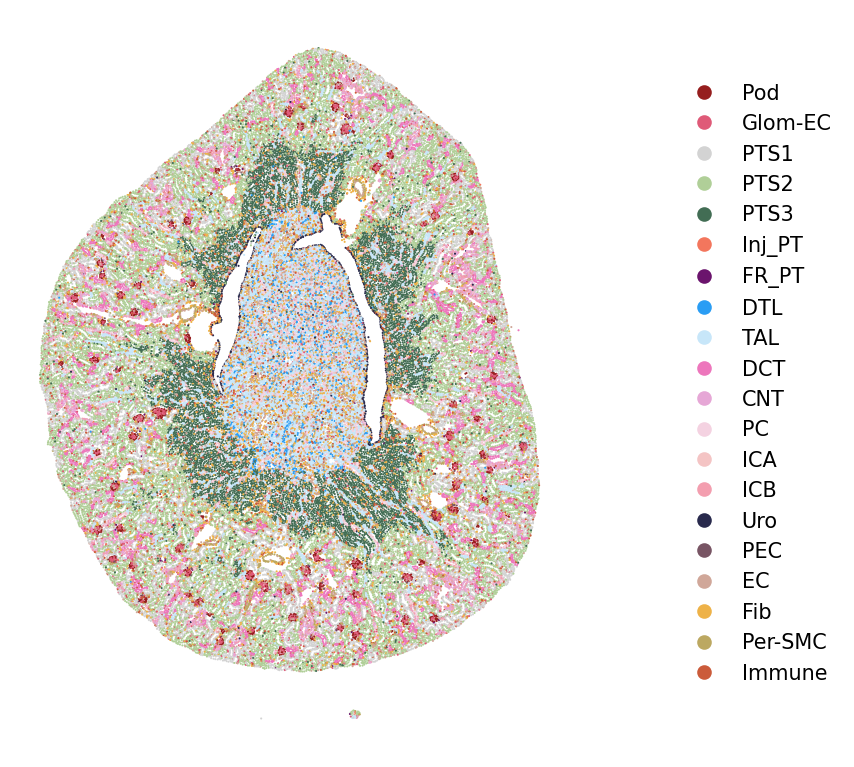
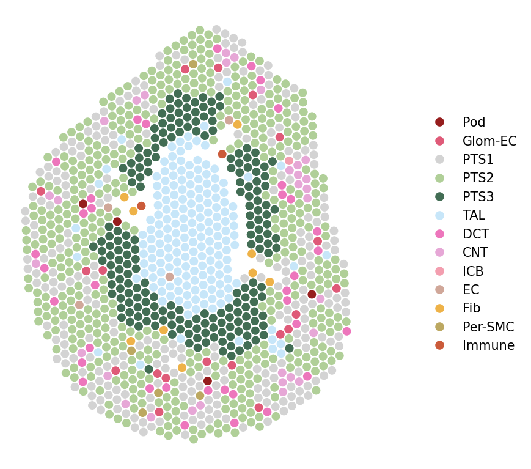

Visualization functions
import scanpy as sc
import numpy as np
import pandas as pd
#import pySTIM as pst
import sys
sys.path.append("/home/spatial/projects/NBT_brief/")
import pySTIM2 as pst
adata_xe = sc.read_h5ad("../Xenium-IRI-ShamR.h5ad")
adata_vis = sc.read_h5ad("../Visium-IRI-ShamR.h5ad")
adata_xe
AnnData object with n_obs × n_vars = 85880 × 299
obs: 'x_centroid', 'y_centroid', 'n_genes', 'n_counts', 'ident', 'region', 'celltype', 'time', 'CN'
uns: 'CN__new_colors', 'CN_colors', 'CN_new_colors', 'TCN_label_colors', 'celltype_FMP_colors', 'celltype_colors', 'celltype_new2_colors', 'celltype_plot_colors', 'celltype_raw_colors', 'celltype_refine_colors', 'dendrogram_TCN_label', 'dist0.3_res3_colors', 'dist0.3_res4_colors', 'ident_colors', 'leiden', 'neighbors', 'pca', 'rank_genes_groups', 't-test', 'umap'
obsm: 'X_pca', 'X_pca_harmony', 'X_umap', 'spatial'
varm: 'PCs'
layers: 'scaled', 'scaled_new'
obsp: 'connectivities', 'distances'
adata_vis
AnnData object with n_obs × n_vars = 1224 × 19465
obs: 'in_tissue', 'n_counts', 'ident', 'x_centroid', 'y_centroid', 'celltype_xenium'
var: 'highly_variable', 'means', 'dispersions', 'dispersions_norm'
uns: 'celltype_raw_colors', 'celltype_xenium_colors', 'hvg', 'leiden', 'log1p', 'neighbors', 'pca', 'rank_genes_groups', 'res2_colors', 'umap'
obsm: 'X_pca', 'X_pca_harmony', 'X_umap', 'spatial'
varm: 'PCs'
obsp: 'connectivities', 'distances'
pst.plot_scatter(adata_xe, color_by='celltype', ptsize=1, seed=123, dpi=150, alpha=1, legend_col=1)

pst.plot_scatter(adata_vis, color_by='celltype_xenium', ptsize=45, seed=123, dpi=150, alpha=1, legend_col=1)

plot_polygon(poly, plot_type="cell",xlims=[900,1120], ylims=[2500,2720],dpi=100,
color_by='celltype_FMP', seed=123, alpha=0.8, ticks=False, edgecolor="#bfbfbf", linewidth=0.4,
width = 5, height = 5)